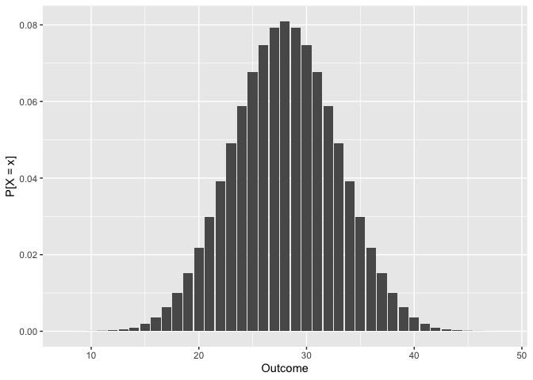
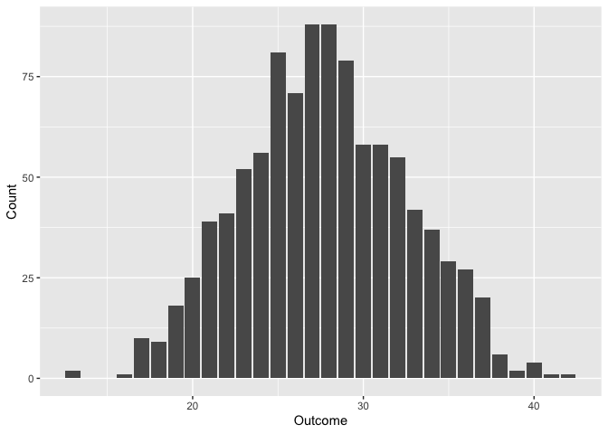

Overview
droll \ˈdrōl\ adjective. 1. having a humorous, whimsical, or odd quality.
droll is an R package for parsing dice notation, analyzing rolls, calculating success probabilities, and plotting outcome distributions. It can help detail-oriented DMs prepare (un)fair encounters in advance or decide on skill check DCs on the fly. Players might also find it useful for determining the best course of action when in a tough situation.
It is designed to be a very lightweight (only one required dependency), very fast (less than 0.4s to get the full distribution of 40d6), and very precise (symbolic internal representation courtesy of Ryacas) anydice for R.
Installation
Install the released version of droll from CRAN with:
install.packages("droll")Or install the development version from GitHub with:
# install.packages("remotes")
remotes::install_github("curso-r/droll")Usage
What are you looking for in droll? Are you a level 1 user, a seasoned level 10 programmer, or a god-like level 20 statistician? Choose your class:
🖍️ User
The most basic usage of droll involves simply rolling dice. You can create any die you want with the d() function and then write an expression that involves that die. Note that, if you want to roll NdX, you should write N * dX.
# Create some dice
d20 <- d(20)
d6 <- d(6)
d4 <- d(4)
# Roll a skill check while blessed
(d20 + 8) + d4
#> [1] 26
# Roll for damage!
8 * d6
#> [1] 17
# Dexterity saving throw with disadvantage
if (min(d20, d20) + 4 < 18) {
print("Full damage!")
} else {
print("Half damage.")
}
#> [1] "Full damage!"Nice and easy, right? If you are a DM, you might also want to use two functions: check_prob() and check_dc(). They allow you to, respectively, calculate the probability of passing (or failing) a skill check and find the necessary DC so a skill check has a given probability of success (or failure). You don’t even need to create the dice you’re going to use inside these two!
# What's the probability of this player succeeding in a DC 15 skill check?
check_prob(d20 + 8, 15)
#> [1] 0.7
# What should the DC be for this player to have a 50% chance of success?
check_dc(d20 + 8, 0.5)
#> [1] 19
# What's the probability of this player failing in a DC 10 skill check?
check_prob(d20 + 8, 10, success = FALSE)
#> [1] 0.05
# What should the DC be for this player to have a 90% chance of failure?
check_dc(d20 + 8, 0.9, success = FALSE)
#> [1] 27There are no attack_*() functions because the mechanics of checks and attacks is the same, i.e., success means rolling a value higher than or equal to a certain threshold. These functions can, therefore, be used for attacks too!
🗡️ Programmer
If you are already used to R’s d/p/q/r notation, you might want to get deeper insights into the roll distribution. This is why the droll(), proll(), qroll(), and rroll() functions exist! They are, respectively, the density, the distribution function, the quantile function, and the random generation for the distribution described by a roll expression.
# P[d20 + 8 = 12]
droll(12, d20 + 8)
#> [1] 0.05
# P[d20 + 8 <= 12]
proll(12, d20 + 8)
#> [1] 0.2
# inf{x: P[d20 + 8 <= x] >= 0.5}
qroll(0.5, d20 + 8)
#> [1] 18
# Draw 3 simulations from d20 + 8
rroll(3, d20 + 8)
#> [1] 14 24 18Once you know how to use these four functions, you can look for their plot_*() variations. They generate plots (using ggplot2 if it’s available) corresponding to the full distributions of d/p/q and a simple histogram in the case of plot_rroll().
# Density of 8d6
droll_plot(8 * d6)
# Distribution function of 8d6
proll_plot(8 * d6)
# Quantile function of 8d6
qroll_plot(8 * d6)
# Histogram of 1000 rolls of 8d6
rroll_plot(1000, 8 * d6)
Every p/q function also has a convenient lower.tail argument that can be set to FALSE in order to run calculations from the upper tail of the distribution.
🪄 Statistician
Since you are an R veteran, you should be able to bend droll to your will. If you’d like to peek into the fabric of droll’s reality, you can use the r() function to get a full roll distribution. If you want maximum precision, you can also stop droll from casting its internal representation (powered by Ryacas) to doubles with precise = TRUE.
# Get full distribution of 8d6
r(8 * d6)
#> # A tibble: 41 × 4
#> outcome n d p
#> <dbl> <dbl> <dbl> <dbl>
#> 1 8 1 0.000000595 0.000000595
#> 2 9 8 0.00000476 0.00000536
#> 3 10 36 0.0000214 0.0000268
#> 4 11 120 0.0000714 0.0000982
#> 5 12 330 0.000196 0.000295
#> 6 13 792 0.000472 0.000766
#> 7 14 1708 0.00102 0.00178
#> 8 15 3368 0.00201 0.00379
#> 9 16 6147 0.00366 0.00745
#> 10 17 10480 0.00624 0.0137
#> # … with 31 more rows
# Unlimited power
r(8 * d6, precise = TRUE)
#> # A tibble: 41 × 4
#> outcome n d p
#> <dbl> <chr> <chr> <chr>
#> 1 8 1 1/1679616 1/1679616
#> 2 9 8 1/209952 1/186624
#> 3 10 36 1/46656 5/186624
#> 4 11 120 5/69984 55/559872
#> 5 12 330 55/279936 55/186624
#> 6 13 792 11/23328 143/186624
#> 7 14 1708 427/419904 2995/1679616
#> 8 15 3368 421/209952 707/186624
#> 9 16 6147 683/186624 695/93312
#> 10 17 10480 655/104976 11495/839808
#> # … with 31 more rowsThe data frame returned by r() can be used as the roll argument of every function discussed above. This skips all internal calculations, so it’s a useful shortcut if you want to run multiple diagnostics on the same roll expression.
As a level 20 statistician, you are not constrained by droll’s built-in dice either. You can create custom dice using the same d() function described before.
Code of Conduct
Please note that the droll project is released with a Contributor Code of Conduct. By contributing to this project, you agree to abide by its terms.